Laporan Pengujian & Bukti Acceptance Criteria
Website Company Profile CV Arsindo Niaga Sejahtera — pengujian fungsional, integrasi, keamanan dasar, responsivitas, dan performa.
1. Ringkasan
Fungsional & integrasi
39 lulus · 0 gagal · 0 flaky · durasi 108 s (Playwright, Chromium, build produksi, database MySQL-compatible).
Performa mobile
Skor Lighthouse performa terendah 85 (target ≥ 80); Accessibility, Best Practices, SEO 100 di semua halaman; CLS 0.
Kualitas kode
TypeScript strict tanpa error, ESLint tanpa error, Prettier konsisten, next build sukses.
2. Acceptance criteria
| # | Acceptance criteria | Status | Bukti |
|---|---|---|---|
| 1 | Seluruh halaman dan fitur prioritas PRD diimplementasikan | LULUS | 5 halaman publik PRD + halaman Armada; 7 menu admin PRD + menu Armada. Diuji pada suite 01 & 04; build produksi tanpa error. |
| 2 | Website menampilkan empat bidang usaha dengan informasi dan galeri masing-masing | LULUS | Uji “beranda menampilkan 4 kartu”, render 4 halaman detail (KBLI, layanan, WA otomatis), galeri lightbox & “Galeri segera hadir”. |
| 3 | Admin dapat login dan mengelola konten tanpa mengubah source code | LULUS | Uji login/logout, ubah ringkasan bidang usaha, ubah NIB profil, tambah/hapus pengguna admin. |
| 4 | Admin dapat mengunggah banyak foto, mengubah urutan, mengaktifkan/menonaktifkan, dan menghapus foto | LULUS* | Urutan (drag-and-drop keyboard), nonaktif, hapus: diuji otomatis. Multi-upload (maks 20, progress, signed upload, verifikasi server) diimplementasikan; uji upload ke Cloudinary asli dilakukan pasca-konfigurasi akun (lihat catatan). |
| 5 | Perubahan konten & galeri tercermin di halaman publik sesuai mekanisme revalidation | LULUS | Uji revalidation: ringkasan bidang usaha, NIB, urutan/status/hapus foto, aktivasi armada langsung tampil di halaman publik. |
| 6 | Data armada rental dikelola terpisah dari galeri dokumentasi | LULUS | Tabel vehicles & vehicle_photos, menu Armada Rental, halaman /armada & /armada/[slug]; uji “armada dikelola terpisah”. |
| 7 | Formulir kontak menyimpan pesan ke database dan tampil di panel admin | LULUS | Uji kirim formulir → tersimpan dengan bidang usaha → tampil & ditandai dibaca di Pesan Masuk; validasi & honeypot. |
| 8 | Responsif 360–1920 px & browser modern | LULUS | Tanpa scroll horizontal di 360/768/1024/1920 px untuk 9 halaman; menu mobile. Diuji di Chromium; CSS memakai fitur yang didukung Chrome, Edge, Firefox, Safari terbaru. |
| 9 | Lighthouse mobile ≥ 80, halaman < 3 detik di 4G | LULUS | Median 3 run per halaman, profil mobile + throttling 4G simulasi: skor performa terendah 85; LCP ≤ 2,9 s; CLS 0. |
| 10 | Proteksi autentikasi, validasi server, pengelolaan secret | LULUS | Uji redirect /admin, API 401, rate limit 5x/menit, hash bcrypt, security headers; Zod di semua Server Action; secret via env. |
| 11 | Website dapat diakses melalui HTTPS pada domain target | PASCA-DEPLOY | Konfigurasi siap (netlify.toml, HSTS, panduan domain). Diverifikasi setelah deploy ke Netlify & DNS domain diarahkan. |
| 12 | Source code, dokumentasi teknis HTML, dan hasil pengujian diserahkan | LULUS | Repository project, docs/dokumentasi-teknis.html, docs/laporan-pengujian.html, laporan Lighthouse & screenshot. |
* Unggah foto ke Cloudinary memerlukan akun Cloudinary production; host Cloudinary tidak dapat dijangkau dari lingkungan pengujian. Lakukan checklist pasca-deploy di dokumentasi teknis bagian 13.E.
3. Kriteria selesai PRD v1
| Kriteria selesai (PRD v1) | Status |
|---|---|
| Admin login, upload 10 foto ke “Rental Mobil”, foto langsung tampil di detail | Siap diuji dengan akun Cloudinary (alur upload langsung ke Cloudinary tidak dapat dijangkau dari lingkungan pengujian). Penyimpanan, verifikasi, & tampil di halaman detail diuji dengan data foto. |
| Admin mengubah urutan foto, urutan di website ikut berubah | ✔ Diuji otomatis |
| Foto dinonaktifkan/dihapus tidak tampil lagi | ✔ Diuji otomatis |
| Klik foto membuka lightbox & bisa digeser | ✔ Diuji otomatis (counter 1/2 → 2/2) |
| Pesan formulir masuk ke Pesan Masuk | ✔ Diuji otomatis |
| Semua halaman rapi di HP, Lighthouse mobile ≥ 80 | ✔ Skor terendah 85 |
| HTTPS di domain perusahaan | Pasca-deploy |
4. Pengujian fungsional & integrasi (E2E)
Kode uji: tests/e2e/*.spec.ts · jalankan dengan npm run test:e2e. Setiap uji memeriksa UI sekaligus state database (Prisma) untuk memastikan integrasi end-to-end.
Halaman publik & responsif (01-public.spec.ts)
| Suite | Skenario | Hasil | Durasi |
|---|---|---|---|
| Halaman publik | render / + metadata | ✔ LULUS | 1.8 s |
| Halaman publik | render /tentang + metadata | ✔ LULUS | 1.2 s |
| Halaman publik | render /bidang-usaha + metadata | ✔ LULUS | 1.5 s |
| Halaman publik | render /bidang-usaha/perdagangan + metadata | ✔ LULUS | 1.3 s |
| Halaman publik | render /bidang-usaha/jasa + metadata | ✔ LULUS | 1.2 s |
| Halaman publik | render /bidang-usaha/perdagangan-oli + metadata | ✔ LULUS | 1.2 s |
| Halaman publik | render /bidang-usaha/rental-mobil + metadata | ✔ LULUS | 1.3 s |
| Halaman publik | render /armada + metadata | ✔ LULUS | 1.0 s |
| Halaman publik | render /kontak + metadata | ✔ LULUS | 1.3 s |
| Halaman publik | beranda menampilkan 4 kartu bidang usaha & CTA | ✔ LULUS | 1.4 s |
| Halaman publik | tentang: visi, 6 misi, 5 nilai, legalitas | ✔ LULUS | 1.1 s |
| Halaman publik | detail bidang usaha: KBLI, layanan, WA dengan pesan otomatis | ✔ LULUS | 1.2 s |
| Halaman publik | kontak: alamat, telepon, email, Google Maps & formulir | ✔ LULUS | 1.6 s |
| Halaman publik | navigasi menu bekerja | ✔ LULUS | 2.0 s |
| Halaman publik | SEO: sitemap & robots | ✔ LULUS | 0.1 s |
| Halaman publik | halaman tidak ada → 404 | ✔ LULUS | 1.5 s |
| Responsif 360–1920 px | tanpa scroll horizontal pada 360px | ✔ LULUS | 3.6 s |
| Responsif 360–1920 px | tanpa scroll horizontal pada 768px | ✔ LULUS | 3.7 s |
| Responsif 360–1920 px | tanpa scroll horizontal pada 1024px | ✔ LULUS | 4.5 s |
| Responsif 360–1920 px | tanpa scroll horizontal pada 1920px | ✔ LULUS | 4.2 s |
| Responsif 360–1920 px | menu mobile dapat dibuka di 360px | ✔ LULUS | 1.9 s |
Autentikasi & keamanan (02-auth-security.spec.ts)
| Suite | Skenario | Hasil | Durasi |
|---|---|---|---|
| Autentikasi & keamanan | route /admin terkunci untuk tamu | ✔ LULUS | 0.9 s |
| Autentikasi & keamanan | API admin menolak tanpa sesi (401) | ✔ LULUS | 0.0 s |
| Autentikasi & keamanan | login gagal menampilkan pesan error | ✔ LULUS | 2.2 s |
| Autentikasi & keamanan | rate limit: diblokir setelah 5 kali gagal per menit | ✔ LULUS | 8.0 s |
| Autentikasi & keamanan | login berhasil & logout | ✔ LULUS | 3.8 s |
| Autentikasi & keamanan | password disimpan dalam bentuk hash bcrypt | ✔ LULUS | 0.0 s |
| Autentikasi & keamanan | security headers aktif | ✔ LULUS | 0.0 s |
Formulir kontak → Pesan Masuk (03-contact.spec.ts)
| Suite | Skenario | Hasil | Durasi |
|---|---|---|---|
| Formulir kontak → Pesan Masuk | validasi sisi klien | ✔ LULUS | 1.3 s |
| Formulir kontak → Pesan Masuk | pesan tersimpan ke database & tampil di admin | ✔ LULUS | 7.8 s |
| Formulir kontak → Pesan Masuk | honeypot: bot tidak tersimpan | ✔ LULUS | 6.4 s |
Panel admin, galeri, armada, revalidation (04-admin-content.spec.ts)
| Suite | Skenario | Hasil | Durasi |
|---|---|---|---|
| Panel admin — konten & revalidation | dashboard menampilkan ringkasan | ✔ LULUS | 2.7 s |
| Panel admin — konten & revalidation | ubah ringkasan bidang usaha → tampil di website (revalidation) | ✔ LULUS | 5.3 s |
| Panel admin — konten & revalidation | validasi server: KBLI harus 5 digit | ✔ LULUS | 3.2 s |
| Panel admin — konten & revalidation | galeri: urutan, nonaktif, dan hapus foto tercermin di website | ✔ LULUS | 7.3 s |
| Panel admin — konten & revalidation | galeri kosong menampilkan 'Galeri segera hadir' | ✔ LULUS | 1.2 s |
| Panel admin — konten & revalidation | armada dikelola terpisah: aktifkan → tampil di /armada | ✔ LULUS | 4.7 s |
| Panel admin — konten & revalidation | profil perusahaan: ubah NIB → tampil di Tentang Kami | ✔ LULUS | 4.2 s |
| Panel admin — konten & revalidation | pengguna admin: tambah, login sebagai user baru, hapus | ✔ LULUS | 6.5 s |
5. Performa — Lighthouse (mobile)
Lighthouse 13, form factor mobile (Moto G Power), throttling simulasi “Slow 4G” + CPU 4×; nilai = median dari 3 run per halaman. Klik “buka” untuk laporan lengkap.
| Halaman | Performance | Accessibility | Best Practices | SEO | FCP | LCP | TBT | CLS | Speed Index | 3 run (perf) | Laporan |
|---|---|---|---|---|---|---|---|---|---|---|---|
/ | 87 | 100 | 100 | 100 | 1.0 s | 2.9 s | 370 ms | 0 | 2.6 s | 84, 87, 87 | buka |
/tentang | 88 | 100 | 100 | 100 | 0.9 s | 2.5 s | 400 ms | 0 | 1.2 s | 85, 88, 91 | buka |
/bidang-usaha | 94 | 100 | 100 | 100 | 0.9 s | 2.6 s | 190 ms | 0 | 2.2 s | 86, 94, 94 | buka |
/bidang-usaha/perdagangan | 94 | 100 | 100 | 100 | 0.9 s | 2.8 s | 150 ms | 0 | 2.2 s | 94, 94, 96 | buka |
/bidang-usaha/rental-mobil | 88 | 100 | 100 | 100 | 0.9 s | 2.8 s | 340 ms | 0 | 2.3 s | 85, 88, 88 | buka |
/armada | 89 | 100 | 100 | 100 | 0.8 s | 2.6 s | 340 ms | 0 | 2.2 s | 84, 89, 95 | buka |
/kontak | 85 | 100 | 100 | 100 | 0.9 s | 2.8 s | 420 ms | 0 | 2.2 s | 85, 85, 88 | buka |
Optimasi yang diterapkan: halaman statis ISR, font self-hosted dengan preload & fallback metrics, gambar Cloudinary f_auto,q_auto + srcset, Google Maps dimuat saat terlihat, prefetch link konten dimatikan, animasi CSS ringan.
6. Pemeriksaan kode
| Pemeriksaan | Perintah | Hasil |
|---|---|---|
| Type checking | npm run typecheck | 0 error |
| Linting | npm run lint | 0 error (3 peringatan informatif React Compiler terkait react-hook-form watch) |
| Format | npm run format:check | Konsisten |
| Build produksi | npm run build | Sukses — 27 rute; halaman publik statis/ISR |
| Migration & seeder | prisma/migrations, npm run db:seed | Diterapkan & dijalankan tanpa error (seeder idempoten) |
7. Bukti tampilan

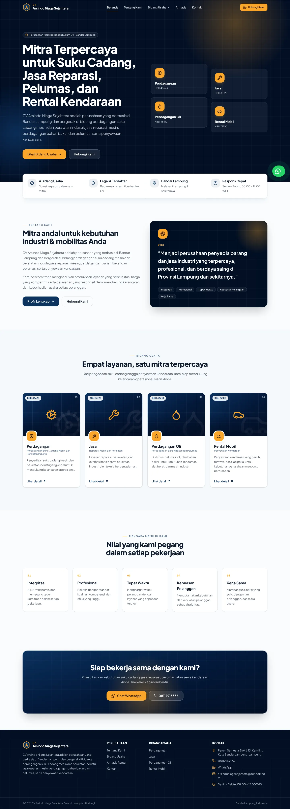

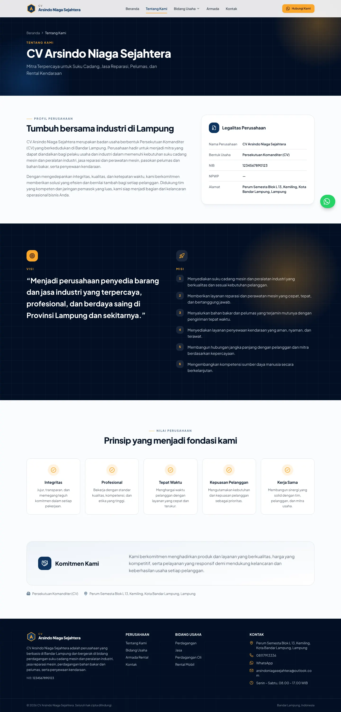

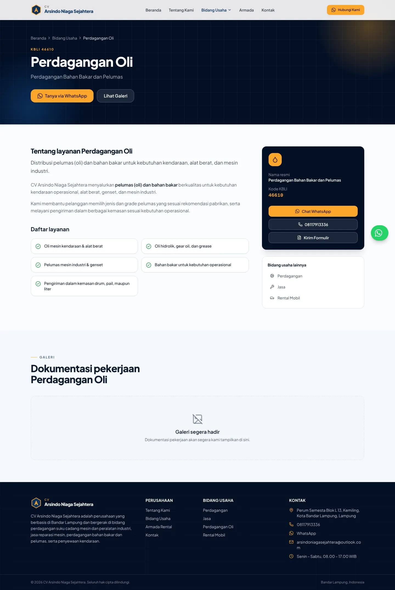

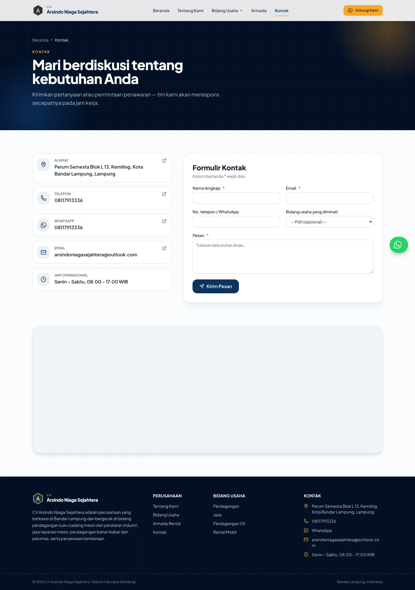

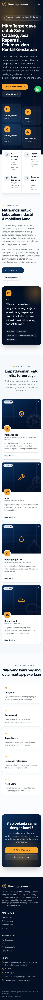

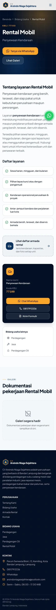

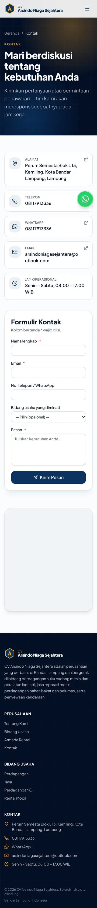

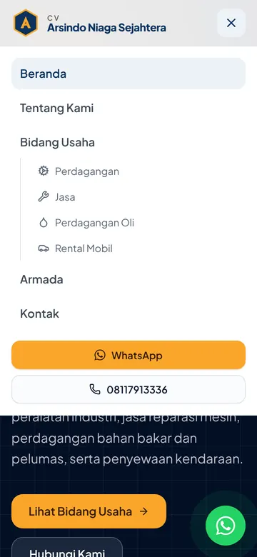

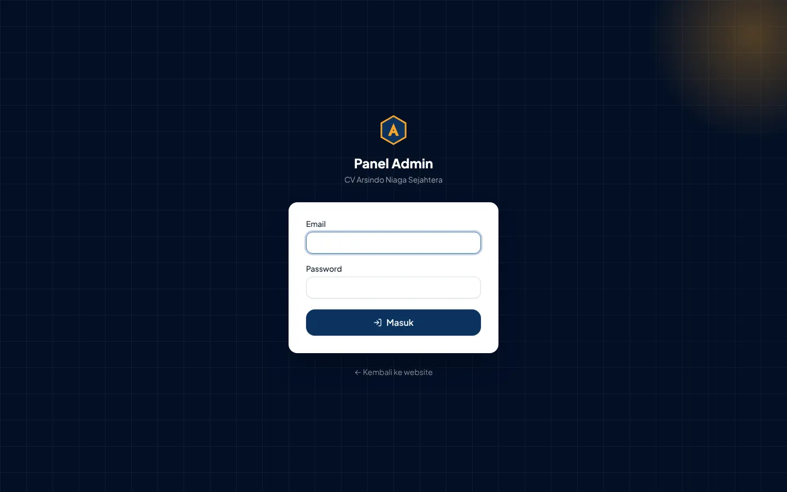

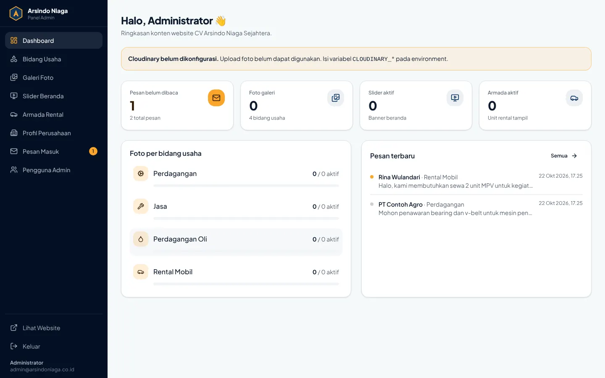

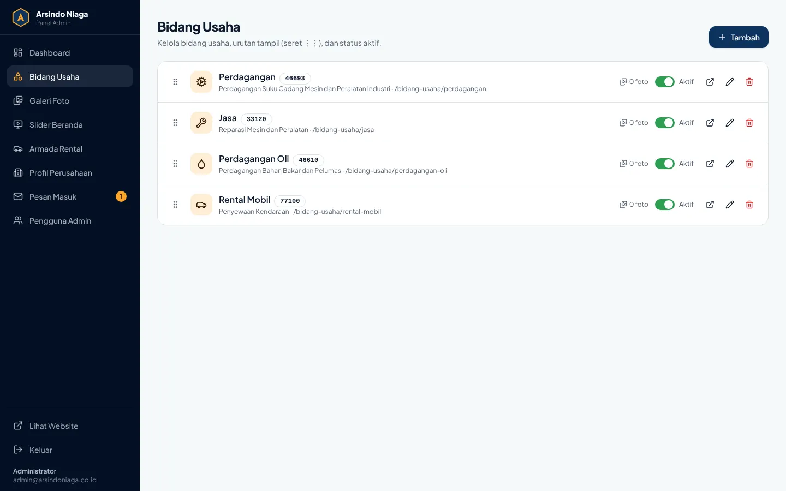

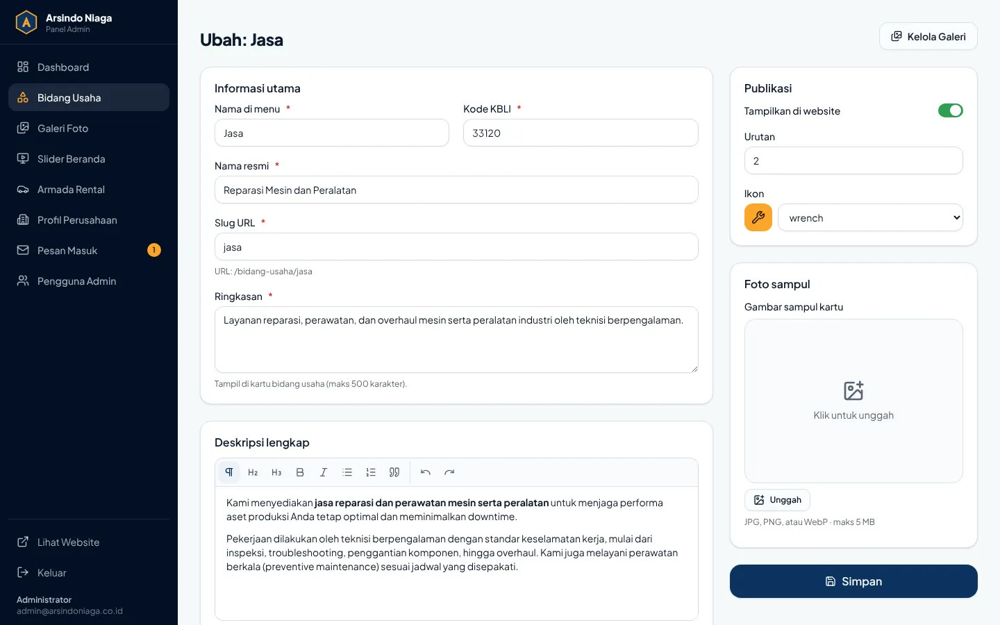

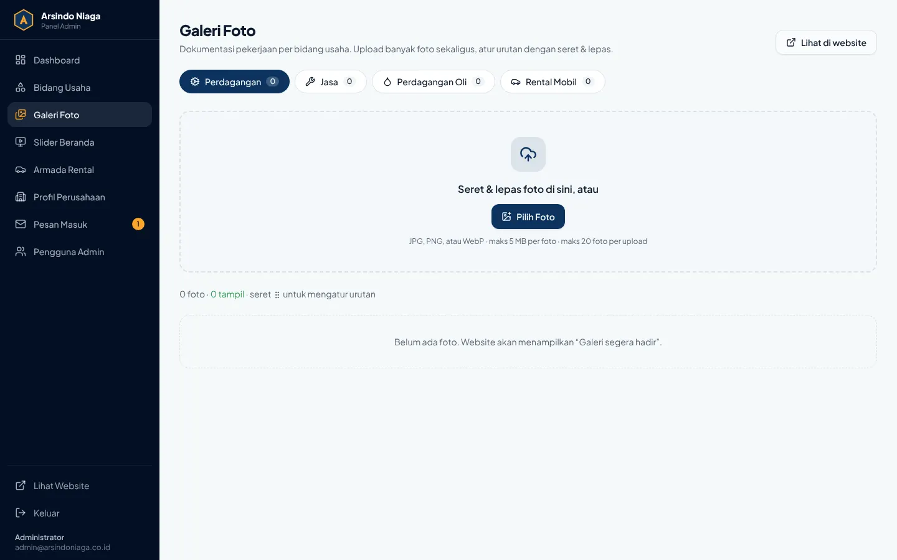

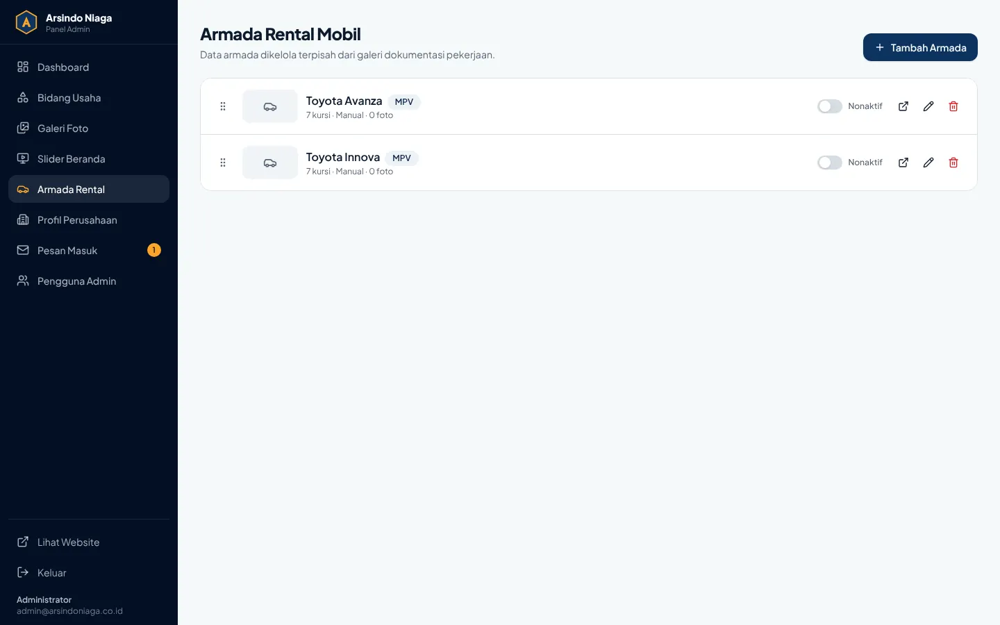

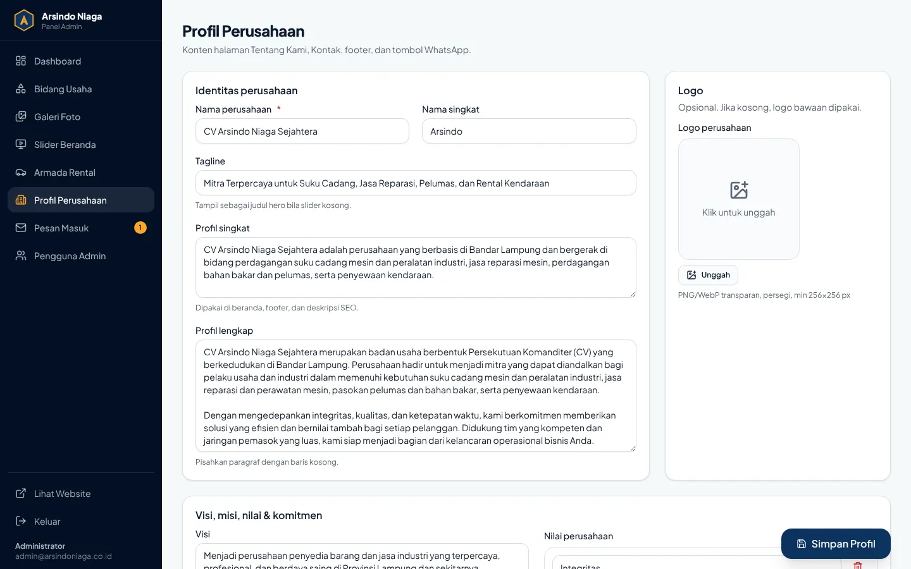

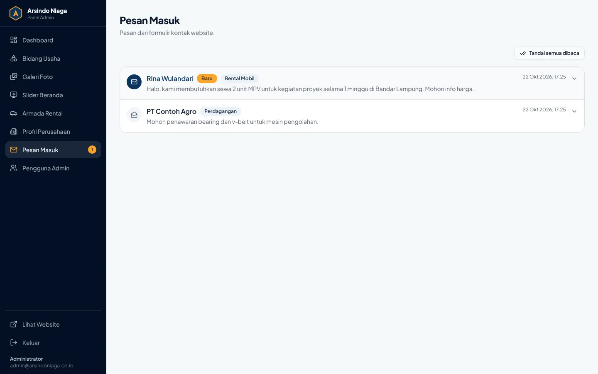
8. Lingkungan pengujian & catatan
- Server:
next start(build produksi Next.js 16.4.2), Node.js 22, database MariaDB 10.11 (MySQL-compatible) dengan migration & seeder project. - Browser: Chromium (Playwright 1.64). Foto uji galeri memakai URL contoh Cloudinary (gambar tidak dimuat di lingkungan uji karena akses jaringan terbatas; logika urutan/status/hapus/lightbox tetap tervalidasi).
- Skor Lighthouse lokal bersifat indikatif; ulangi dengan PageSpeed Insights setelah deploy di domain produksi (jaringan CDN Netlify umumnya lebih cepat).
- Item pasca-deploy: HTTPS di domain perusahaan, upload foto ke akun Cloudinary production, uji di Safari iOS/Firefox perangkat nyata.